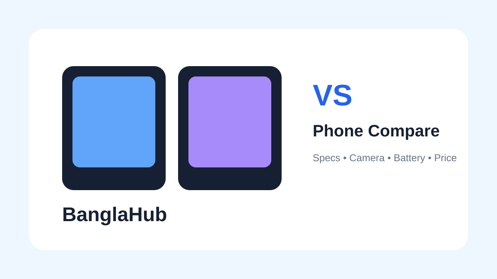

📱
Specifications and Real Use
Compare processor, RAM, storage speed, display refresh rate and network support against your actual workload.

🆚 COMPARISON GUIDEChoosing between two phones requires more than checking one specification. Compare price, performance, camera, battery, display, software support and warranty together.
Compare processor, RAM, storage speed, display refresh rate and network support against your actual workload.
Consider sensor quality, stabilization, video capability, brightness, contrast and viewing experience rather than megapixels alone.
Compare capacity, charging speed and software efficiency. A larger battery does not automatically guarantee longer real-world endurance.
Compare the same RAM and storage variant whenever possible. Check official warranty, taxes, accessories, delivery costs and the seller's current price before deciding.